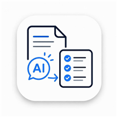

안녕하세요.
AI 디지털 도우미입니다.
문서를 쉽게 이해하고
해야 할 일을 알려드리겠습니다.
몇 가지만
알려주시겠어요?
입력하신 정보는 이 기기와 안전한 서버에만 저장되고,
더 알맞은 설명을 드리는 데만 사용돼요.
원하지 않으면 건너뛰어도 됩니다.
이름
성별
나이
만 나이를 숫자로 적어주세요. 나이에 따라 받을 수 있는 혜택이 달라요.
사시는 지역
시/군/구까지 자세히 적어주시면 더 알맞은 정보를 드릴 수 있어요.
자녀(보호자) 정보도
알려주시겠어요?
위험한 문자를 받았을 때 자녀에게 바로 알리거나,
긴급 도움 버튼으로 전화를 걸 때 사용돼요.
원하지 않으면 건너뛰어도 됩니다.
보호자 이름
보호자 전화번호
이 문서에 적힌 내용을 바탕으로 답해드려요. 문서에 없는 내용은 그렇다고 알려드립니다.
찍은 사진
여러 장을 찍으셔도 됩니다. 같은 문서의 앞뒤든, 서로 다른 문서든 알아서 구분해 드려요.
고지서를 촬영하면 여기에 모아서 보여드릴게요.
주변 복지센터·경로당 찾기
내 위치를 확인하고 있어요...
OpenStreetMap 공개 데이터를 기준으로 하며, 등록되지 않은 시설은 나오지 않을 수 있어요. 정확한 정보는 관할 주민센터에서 확인하세요.
경기데이터드림 공공데이터(경로당 현황) 기준이며, 경기도 지역만 안내해드려요.
기초연금 신청 안내
만 65세 이상이면서, 소득인정액이 선정 기준액 이하인 어르신께 매달 연금을 지급하는 제도예요. 소득이 적을수록 더 많이 받을 수 있어요.
- 주소지 관할 주민센터(행정복지센터)를 방문하거나
- 복지로 홈페이지(온라인)에서 신청할 수 있어요
- 신분증만 있으면 신청 가능해요
무료 건강검진
만 40세 이상이면 국민건강보험공단에서 2년마다 일반건강검진을 무료로 받을 수 있어요. 검진 대상자에게는 우편이나 문자로 안내가 옵니다.
- 신분증만 챙기면 돼요
- 공복이 필요한 검사는 검진기관에서 미리 안내해줘요
보이스피싱 예방
공공기관이나 은행은 절대 전화나 문자로 계좌번호, 비밀번호, 인증번호를 물어보지 않아요. 이런 요청을 받으면 100% 사기입니다.
- 절대 계좌번호·비밀번호·인증번호를 알려주지 마세요
- 전화를 끊고 118(경찰청)로 직접 확인하세요
- 가족이나 보호자에게 먼저 알려주세요
무엇이
궁금하세요?
알고 싶은 내용을 골라주세요.
사진(문서) 확인 방법
- 사진이 흐리게 나오면 밝은 곳에서 다시 찍어주세요
- "지금은 분석이 어려워요"라고 나오면 잠시 후 다시 시도해주세요
문자 확인 방법
- 계좌번호, 비밀번호, 인증번호를 요구하는 문자
- 모르는 링크(주소)를 눌러보라는 문자
- "위험 감지" 표시가 뜨면 절대 응답하지 말고 118로 신고하세요
기록 보는 방법
알아두면 좋은 정보
주변 복지센터·경로당 찾는 방법
- "위치 권한이 필요해요"라고 나오면 기기 설정에서 위치 권한을 허용해주세요
음성으로 다시 듣는 방법
긴급 도움 요청 방법
설정 사용 방법
분석하고 싶은 문서를 촬영하거나 사진첩에서 불러오세요.
문자 내용도 불러와 확인할 수 있어요.
- 문서의 글자가 선명하게 보이도록 촬영해 주세요.
- 빛 반사가 적은 밝은 곳에서 촬영하면 더 정확합니다.
사진이 흐려요.
글씨가 잘 보이지 않아요.
밝은 곳에서 다시 찍어주세요.
지금은 분석이 어려워요.
잠시 후 다시 시도해주세요.
지금은 분석이 어려워요.
지금은 체험판(튜토리얼)이라
실제 분석은 제공되지 않을 수 있어요.
궁금한 점은 관리자에게 문의하세요.
🔵 진행 중
오도록 맞춰주세요
👆 촬영 버튼을 눌러주세요
이렇게 흐릿하면
안 돼요.
글씨를 읽기 어려워요.
아래처럼 나오면 다시 찍어주세요.
건강검진 대상자 안내
○ 대상: 만 40세 이상
○ 기간: 2026. 1. 1 ~ 12. 31
○ 방법: 가까운 검진기관 예약
※ 미수검 시 건강보험료 할증
🔵 진행 중
AI가 문서를 읽고,
그림도 함께 준비하고 있습니다
건강검진 대상자 안내
○ 대상: 만 40세 이상
○ 기간: 2026. 1. 1 ~ 12. 31
○ 방법: 가까운 검진기관 예약
※ 미수검 시 건강보험료 할증
⚪ AI가 정리한 내용
올해 안에 건강검진을 받으셔야 합니다. 가까운 검진기관에 예약하시고, 신분증을 준비해주세요.
문자 확인을 하려면
문자 읽기 권한이 필요해요.
확인을 누른 문자만 서버로 보내 분석해요.
다른 문자는 읽지 않아요.
최근 문자
최근 문자를 가져왔어요. 확인하고 싶은 문자를 눌러주세요.
휴대폰 홈
👆 💬 문자 앱을 눌러주세요
💬 문자
이 문자를 길게 눌러 복사해보세요.
실제 문자 앱에서도 이렇게 하시면 돼요.
복사가 완료됐어요!
이제 AI 디지털 도우미 앱으로
돌아가주세요.
여기에
문자 내용을 붙여넣어주세요.
내용이 너무 짧아요.
문자 전체가 복사되지 않은 것 같아요.
다시 복사해서 붙여넣어주세요.
문자 내용이
들어왔어요.
🔵 진행 중
AI가 문자를 확인하고,
그림도 함께 준비하고 있습니다
본 판별은 인공지능 분석 결과이므로 법적 효력이 없습니다.
의심스러운 경우 반드시 관계 기관에 직접 문의하세요.
분석 기록
분석 기록
일정
설정
화면 글자 크기
음성 읽기 속도
내 정보 (맞춤 안내용, 선택 사항)
문서·문자를 분석할 때 이 정보를 함께 참고해서 더 알맞게 설명해드려요. 다른 곳에 공유되지 않습니다.
보호자 정보
보호자에게 알릴 때는 이 기기의 문자 앱이 열리고, 내용이 미리 채워집니다. 보내기는 직접 눌러주세요 — 앱이 대신 문자를 보내지는 않습니다.
모든 설정은 이 기기에 자동 저장되어, 앱을 새로고침해도 유지됩니다.
언어 설정
경기도 거주 외국인주민 중 비중이 높은 4개 언어를 지원합니다(중국·베트남·태국·우즈베키스탄, 공공통계 기준 상위 국적). 화면 핵심 문구만 번역되며, AI 분석 결과는 정확성을 위해 한국어로 제공됩니다.
고객 지원
앱 버전 1.0.0 · © 2026 온담